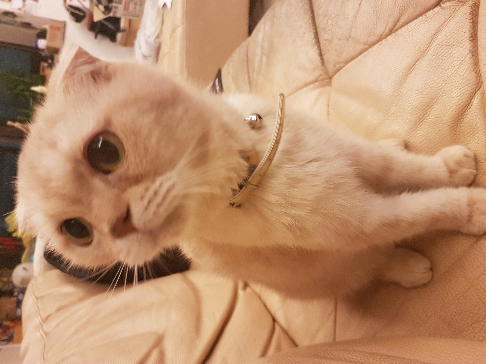
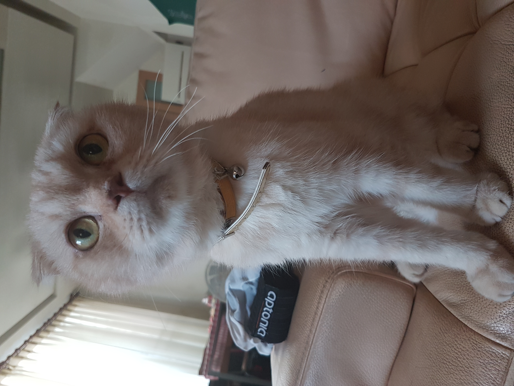
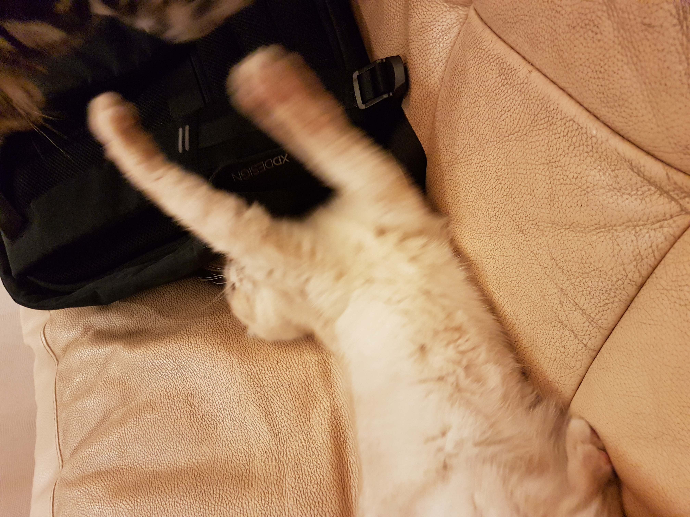
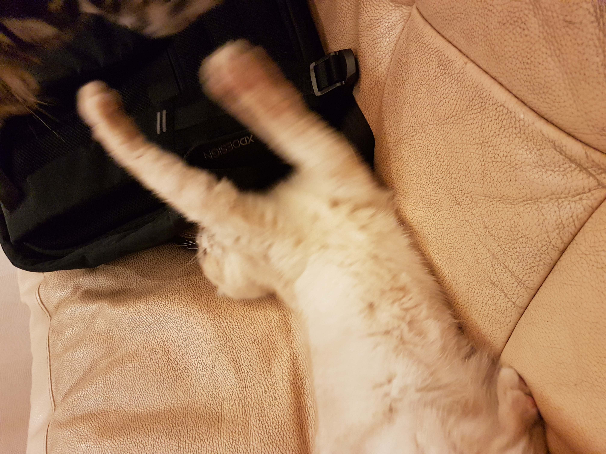

My lovely familys.
 This is my first cat.His name is money.He began to accompany me since I was five years old，and he's a caring and intelligent family
This is my second pet.Her name is mini.She only has been with me for a year.She is a pretty girl and I often call her a little princess.
Finally, the cat was I recently raised.He was mischievous and liked to fight with his brother and sister.When I wanted to punish him, he was good at pretending to be innocent.I have nothing to do with him
 

But sometimes，The biggest brother and sister also like to fight.